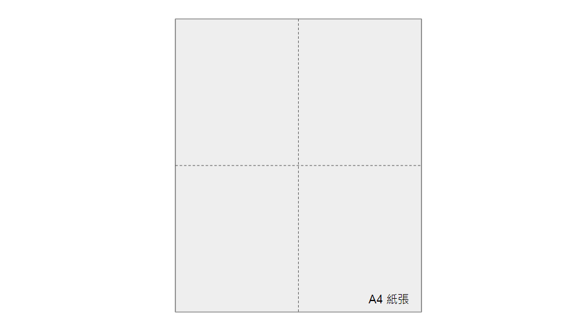
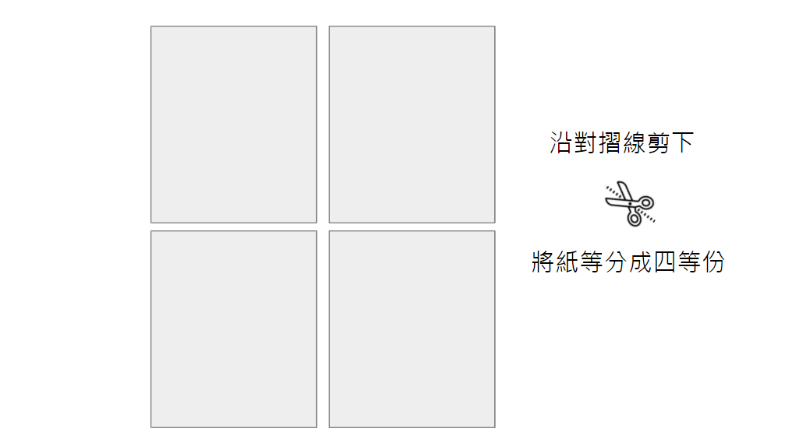
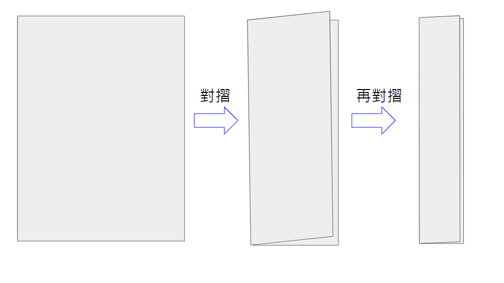
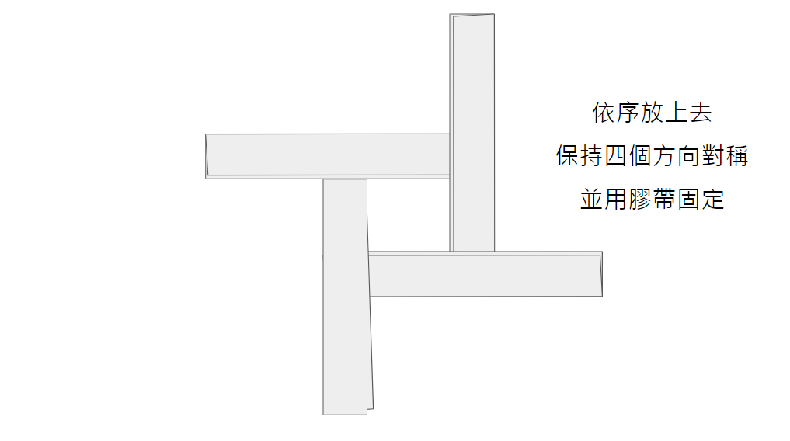
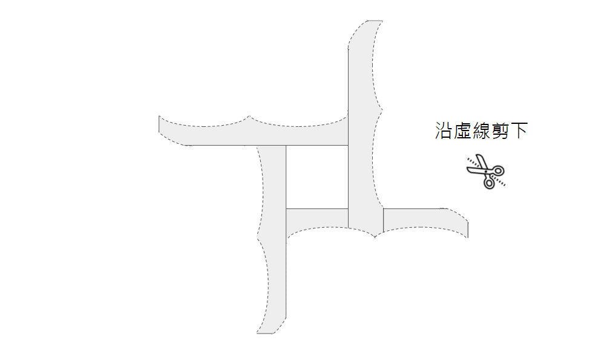
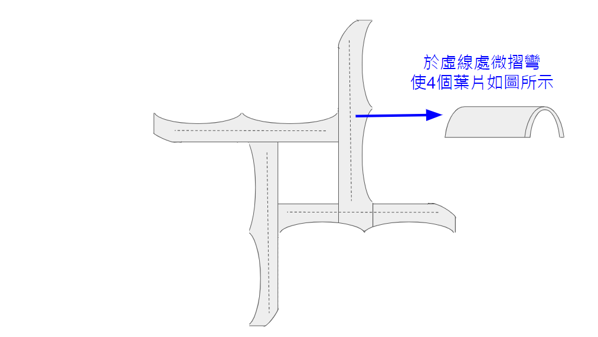

四葉迴力鏢
2/14 2022
類別：科學實驗
以往做的迴力鏢都是V型或三葉式的，
但這個影片分享的做法是使用四葉式，不同的是除了可以用手接回迴力標外
還多了一個可用手指頭接的趣味
實驗材料:
1、A4紙張 2、剪刀 3、膠帶 4、釘書機
迴力鏢製作流程:
Step1、選一張A4的紙張，並將它依長邊和短邊都對摺一次，得到兩條對稱線。
Step2、用剪刀沿對摺線剪下，將紙張等分成四等份。
Step3、將每一等份的紙張沿長邊對摺再對摺，變成一個細長方形。
Step4、將對摺兩次的四張紙依下圖所示放置，排成迴力標的形狀，確認位置後，用膠帶或訂書機將紙張固定，使迴力標定形。
Step5、沿虛線將迴力標的輪廓剪下，建議可先用鉛筆在紙上畫記號後再剪，以免剪壞。
Step6、將迴力鏢的4個葉片以圖片的虛線為中心微摺變成一弧面，使其在旋轉時能因「馬格努斯效應Magnus effect」形成上升力。
Step7、將四個葉片的尾端稍微向上摺起，完成你的四葉迴力鏢。。